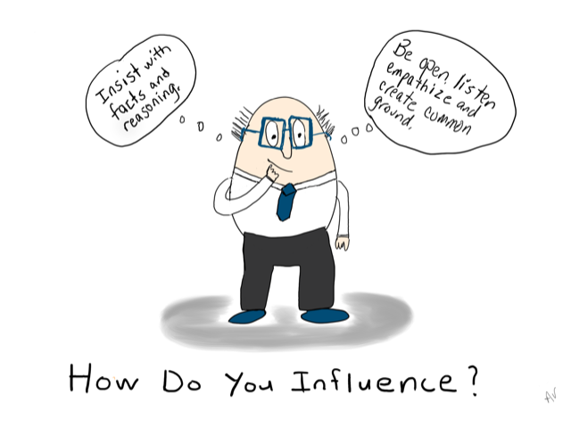

You could say that IQ is like book smarts and EQ is like emotional smarts.
One thing that struck me when learning about this was that they're actually both very important and feed into one another, e.g. you might know that you feel - confused, slightly amused, curious all at the same time. This is your EQ - self awareness. But IQ is what helps you to know the right word to express it - you feel perplexed. It's just that we've spent very many hours building up our IQ - aka days and weeks and years at school. However most of us have spent very little time intentionally learning/developing our EQ.
It's a good idea not to neglect this though. And the good news is that many people believe it's much easier to strengthen your EQ - at any age or stage in your life, whereas IQ is arguably a little more static.
Why should I up my EQ game?
Well the benefits are pretty universal. Firstly it can really help employability - studies show it's predominantly EQ related factors that separate the good from the best, in the tech sector specifically but also at management levels and most likely in a lot of places. Its so much easier to work with someone who knows themselves and takes themselves out of the colloquial room, before getting mad about something, or can tell you upfront that they really struggle with xyz, than the person who pretends it's all ok then throws their lunch at poor Betty because she made the mistake of walking past at the wrong moment.
Once you've got your mind in a better place, your body will follow suit and ultimately life gets better!
Cool, so...how?
Well you could break it down into 3 main steps. One; Attention Training
This is where you basically say, "Hey bod, whatsup?" "Why don't you tell me how you're feeling and I'll actually pay real attention".
Second; Since you're learning to listen to your body you can now get better at recognising and knowing yourself. Understand yourself a little more and grow awareness even, for how you act/respond/deal with certain situations.
Third; re-train that brain. Get into constructive mental habits instead of useless ones. Instead of "I'm not very good at that" => "ooh let's give it a go!"
Just training your brain to be kinder and help itself out really.
Improving your EQ benefits you and those around you.
